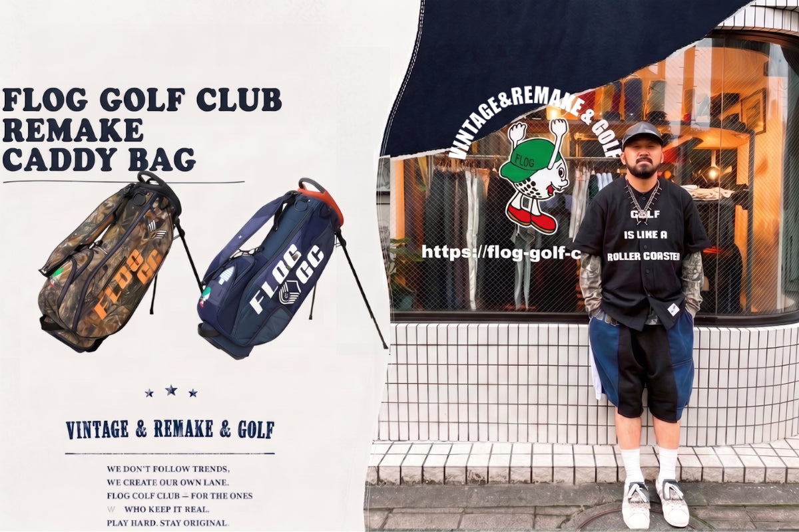
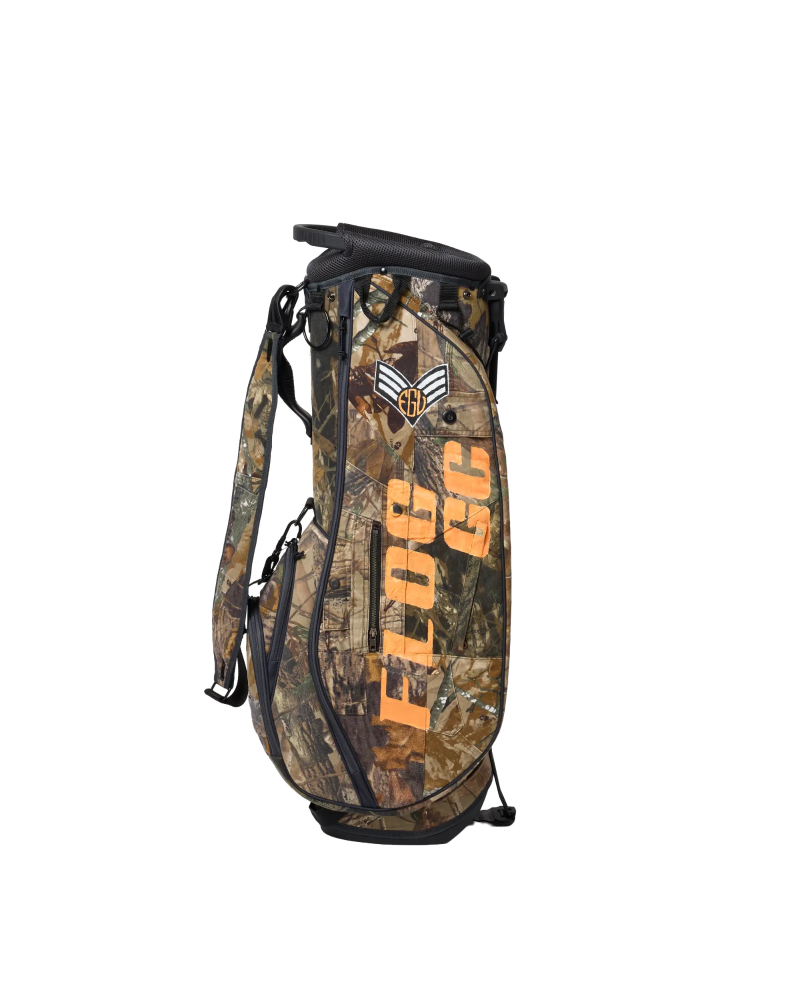
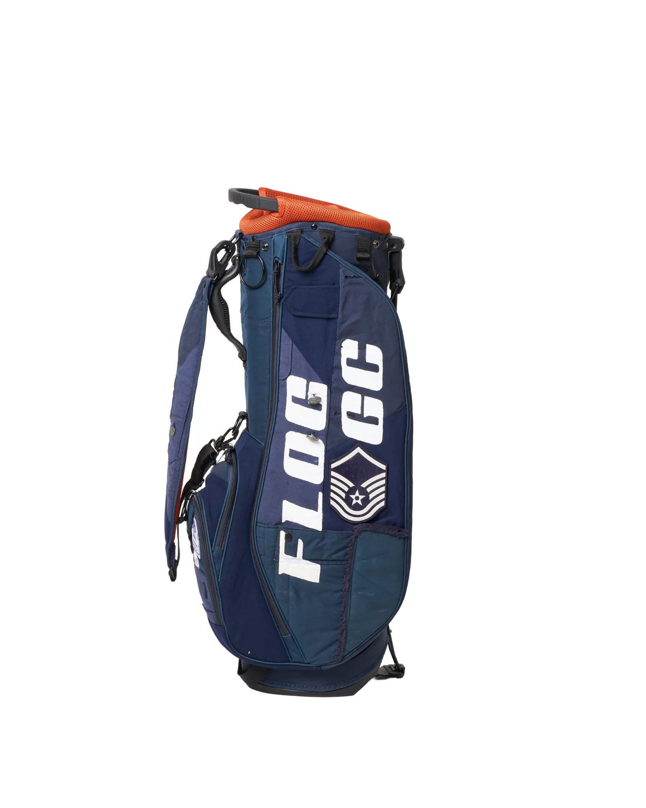
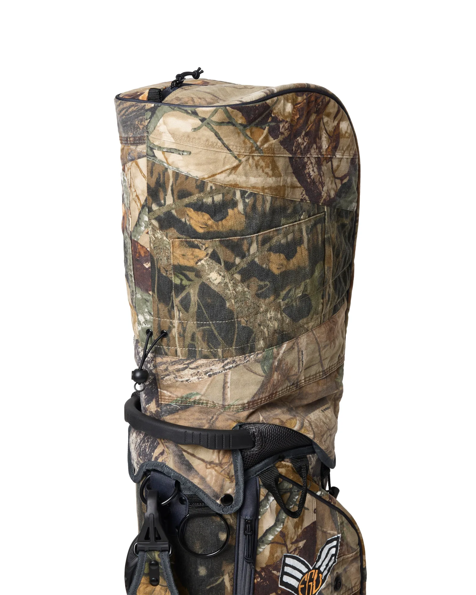
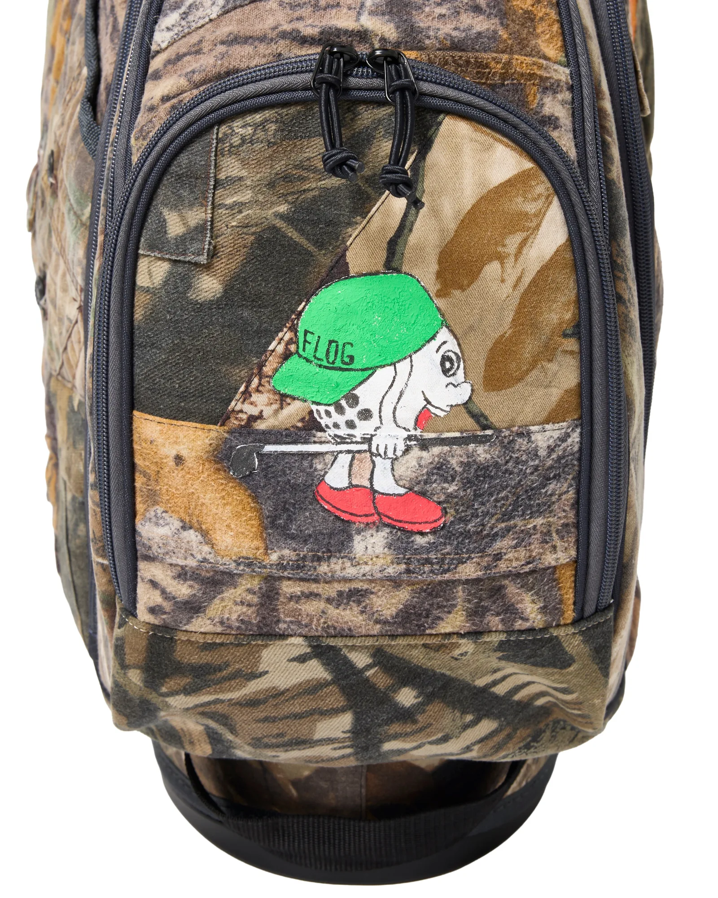
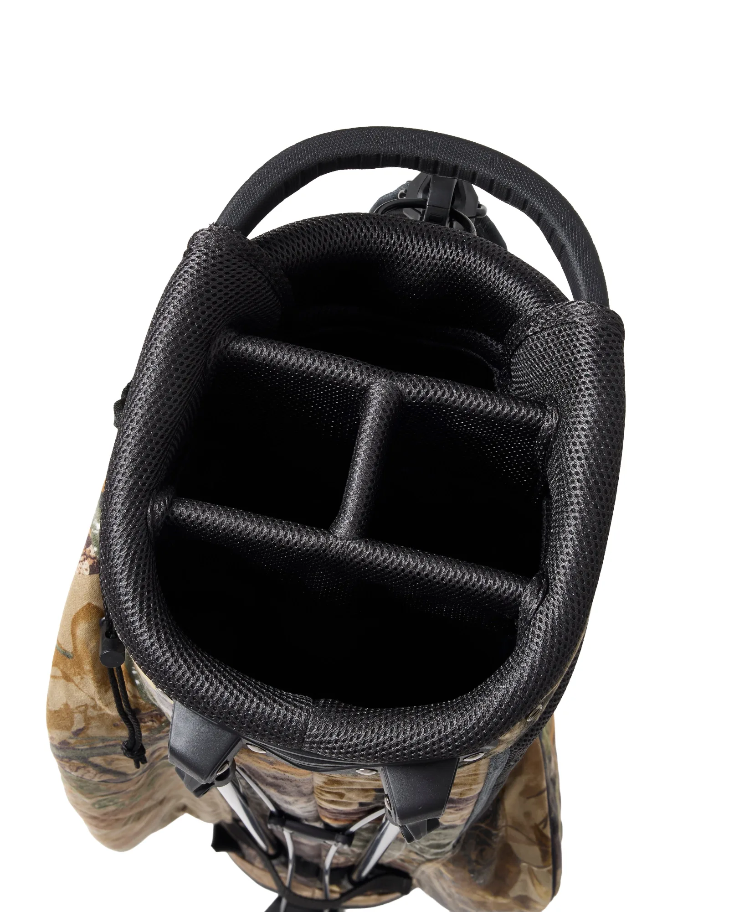
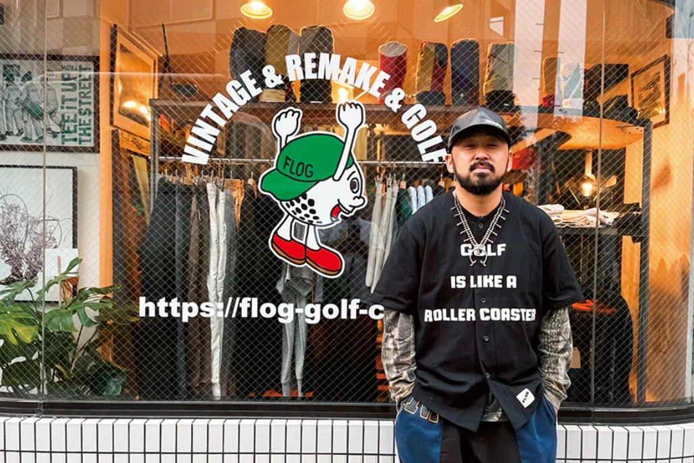
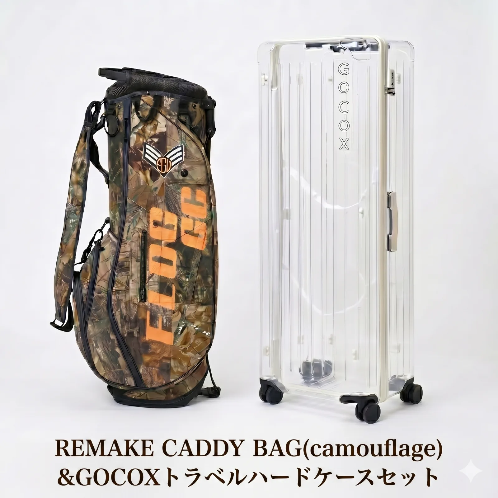
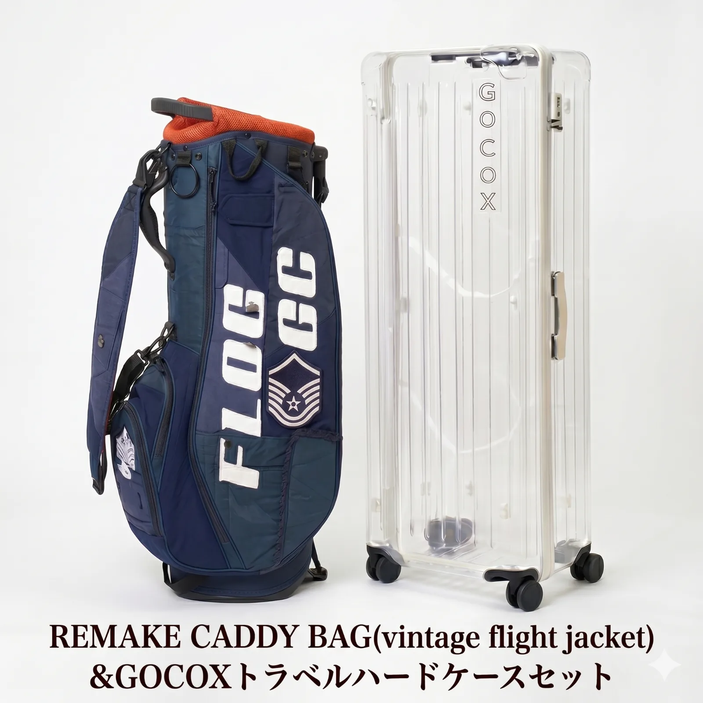
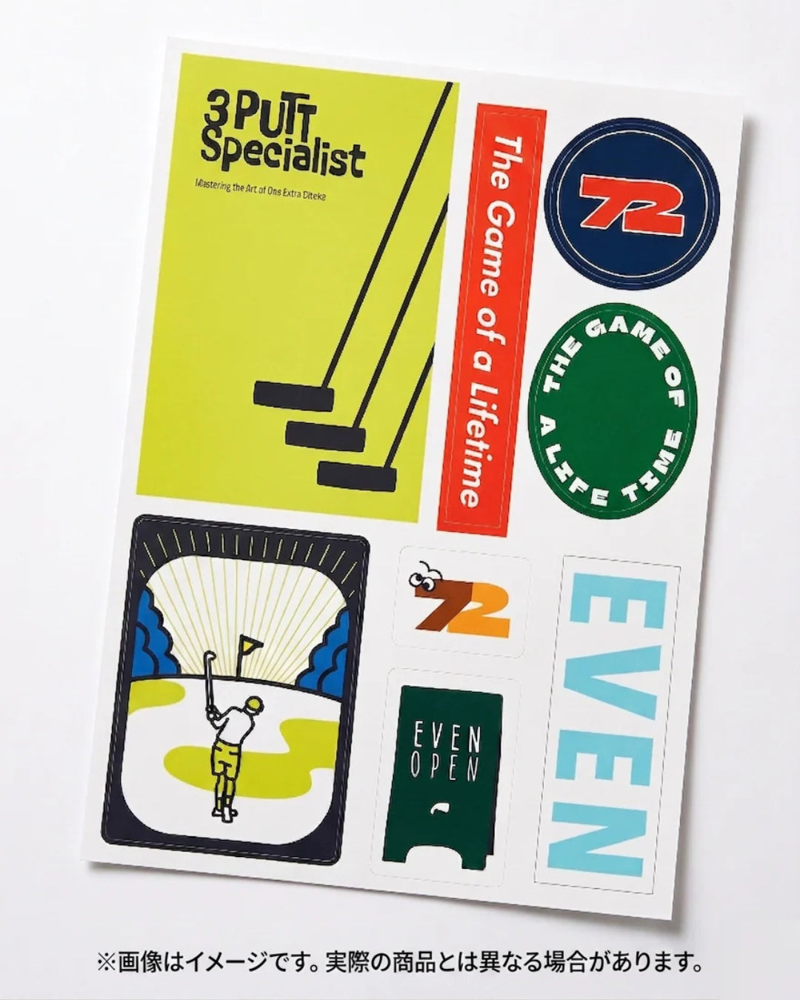

スタイリスト尾後啓太氏が手掛ける、傑作。
無骨さと遊び心の共演したハンドペイントが光る【一点モノ】のリメイクバッグ。
古着をベースとした複数のパーツを組み合わせて再構築された唯一無二の2モデルがリリース。

（camouflage)
（vintage flight jacket)
カモフラ柄の古着をベースとした（camouflage)と希少なヴィンテージのフライトジャケットを解体して組み合わせた（vintage flight jacket)。
どちらも「FLOG GOLF CLUB」独自の感性で表現されたクリエイティビティ溢れる逸品。
尾後氏のリメイクバッグは入荷のたびに即完売する人気商品。
二つとして同じ物は存在しないオンリー1の一品、手にするのは…
REMAKE CADDY BAG（camouflage)

無骨さと遊び心の共演。
カモフラージュ柄の古着がベースのため、生地の質感、カモフラ柄の出方がそれぞれ異なる。リメイクならではの遊び心とミリタリーの無骨さを合わせ持ったデザイン。
耐久性に優れたミリタリーファブリックと、手作業による大胆なペイントワークがシンクロし、唯一無二の存在感を放つ。使い込むほどに増す経年変化も楽しめる。

ハンドペイントが生む唯一無二の表情
配置されたロゴやキャラクターは、すべて職人の手によるハンドペイント仕上げ。グラフィックが重なり合うデザインに、大人の遊び心を感じさせる。一点一点施すグラフィックは、同じ配置・同じ掠れ方が二つと存在せず、無骨なボディに宿る、モダンアートのような遊び心が魅力。

実用性を追求した機能美
見た目のインパクトだけでなく、ゴルフバッグとしての収納力や、担ぎやすさを徹底的に追求.複数の古着パーツから厳選されたポケットレイアウトは、使えば分かるプロダクトデザインとしての秀逸性を秘める。
REMAKE CADDY BAG
（vintage flight jacket)

形を変えて継がれる系譜
いわゆるMA-1やL-2と呼ばれるようなフライトジャケットを解体、年代やモデルの枠を超え再構築された独自のバランスでパッチワーク。ナイロンの鈍い光沢感と重厚なステッチワークが、圧倒的なクラフトマンシップを感じさせる。形を変え一つのアイテムとしてその系譜を感じることができるマニア涎垂のアイテム。

歴史を纏う、エイジングパーツ
実際のアイテムに使われていたボタンやジップ等のパーツを適所に配置。新品のプロダクトには決して出せない、リアルなヴィンテージの深みと風格を内包。

ストリートとゴルフの融合
尾後氏も好きだと謳うカルチャーでもある、アメリカのワークやスケートスタイルを感じさせる.コース上での異彩を放つデザインでありながら、トラッドなゴルフマナーにも馴染む洗練度.尾後氏ならではの卓越した感性だからこそ出せる絶妙なバランス。


単にクラブを運ぶための道具にとどまらず、
持ち主のスタイルを雄弁に語るピース。
「量産品では満足できない」そんな本物志向の
大人へ捧げる一品。
この無骨ながらも愛らしいキャラクターたちが
共存する独特の世界観を
ぜひあなたのゴルフライフに取り入れてみては。

大人気ブランドFLOG GOLF主宰でもある、その独自のセンスは業界のみならず注目を集めている。
大切なキャディバッグを守るトラベルハードケースセットも


※サンプルとなるためロゴの仕様が異なります。
製品では黒縁のロゴとなります。
スタイリスト尾後啓太氏が手掛ける、世界に一つだけのリメイクキャディバッグと、その大切なキャディバッグを守るGOCOXのトラベルハードケースがセットになったこだわりセット。
セットで購入するとFLOG GOLF CLUBのオリジナルステッカーシートが付いてくる！
